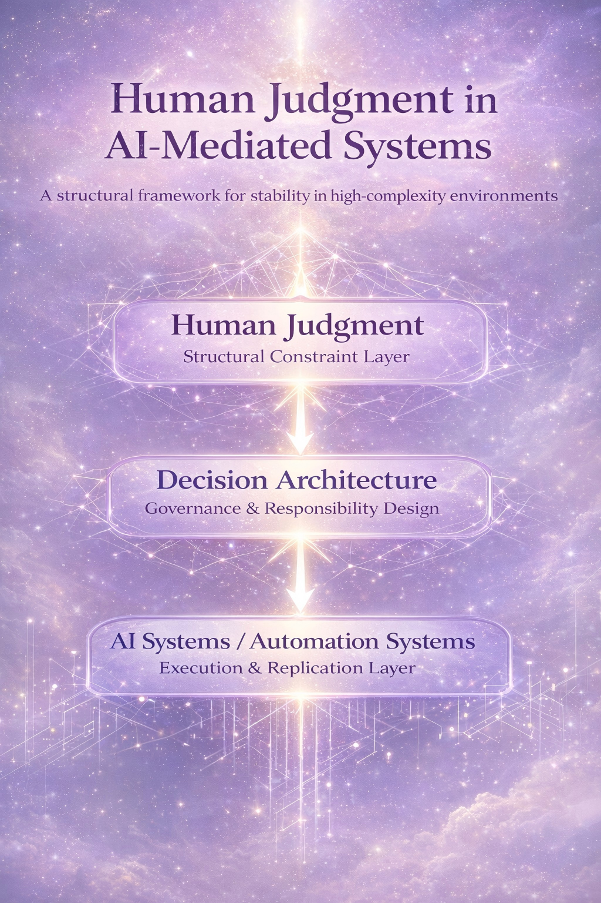
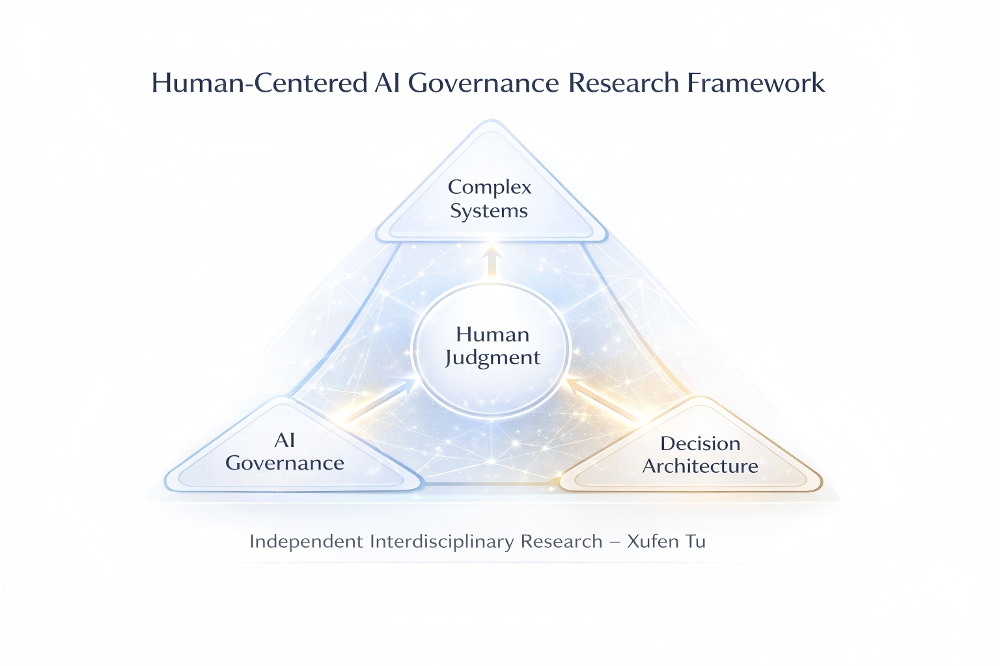
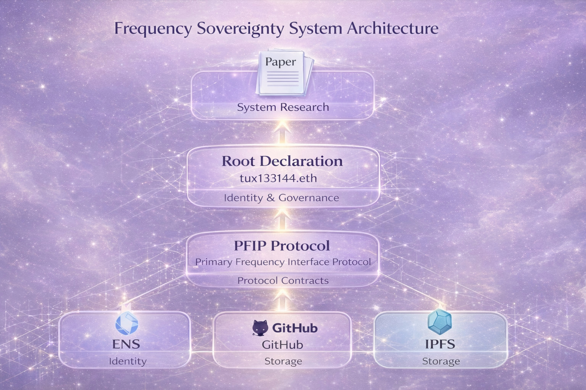

An Experimental Learning and Research Platform for Human Wellbeing, Cognitive Clarity, and Future Adaptation in the Age of AI
Oxygen Magic Academy is an independent experimental platform exploring new forms of learning, human wellbeing, cognitive clarity, remote interaction, and future adaptation in a rapidly changing world. It brings together exploratory learning environments, human judgment research, and discussion-based formats for people navigating technological and social transition.
Oxygen Magic Academy is not presented as a conventional school or licensed educational institution. It is an independent experimental platform exploring more flexible, human-centered, and adaptive forms of learning, discussion, and future-oriented exploration in technologically transformed environments.
The Oxygen Magic Academy concept was initiated in 2024 as an exploration of new learning environments, human wellbeing, and future-oriented education models.
Future learning does not need to feel heavy, rigid, or distant. It can become lighter, more interactive, more human-centered, and more connected to real adaptation in life and work.
The platform explores practical human capacities that remain valuable even as technology changes rapidly. These are not presented as formal academic credentials, but as exploratory capacities related to attention, judgment, adaptation, and future participation in changing work and learning environments.
The platform explores more relaxed and immersive learning formats, including remote conversations, interactive discussions, focused environments, and experimental settings that may support attention, curiosity, and continuous learning.
The platform explores how participants may strengthen judgment awareness, understand complexity, and engage more clearly with uncertainty in changing technological environments.
The platform explores how people may transition into new forms of work through transferable capacities such as cognitive clarity, decision awareness, system understanding, and adaptive learning.
Oxygen Magic Academy retains an interest in the relationship between human wellbeing, learning environments, and cognitive clarity. Early exploratory activities involved remote interaction, focused discussion, and attention-based cognitive exercises conducted within controlled breathing environments, including high-oxygen chambers.
These exploratory settings were used to observe how environmental conditions, focused attention, and collaborative dialogue might influence learning engagement, clarity of thought, and reflective decision awareness.
Over time, these observations expanded into broader questions concerning human judgment, complex systems, and governance structures within technologically mediated environments.
The platform explores how surrounding conditions can support or shape learning experiences. Rather than treating learning only as information transfer, this model considers environment, body state, attention, and human interaction as part of the learning process itself.
Human wellbeing is treated as an important context for attention, clarity, and sustained participation. Cognitive steadiness, reflective awareness, and the ability to remain engaged are all seen as relevant to future adaptation.
The platform’s current research direction connects future learning with human judgment, complex systems, and governance structures in AI-mediated environments. This gives the platform a deeper foundation beyond conventional course-based models.
Oxygen Magic Academy explores how human judgment functions as a stabilizing interface in high-complexity environments, and how exploratory learning conditions may relate to clearer participation in a world increasingly shaped by artificial intelligence.

The platform’s research framework examines how learning, human decision-making, governance awareness, and technological systems can be reconnected in more responsible ways.

One long-term aim of the platform is to explore how people facing technological change, employment shifts, and educational mismatch may find new paths for adaptation, resilience, and future participation. The platform does not provide licensed career placement or formal academic certification.
A space to explore new directions in learning, cognitive clarity, and future adaptation for people navigating uncertainty, transition, or new technological realities.
A conceptual foundation for thinking about human-centered transition, evolving decision environments, and the need for clearer participation in changing systems.
A long-range exploration of how lighter, more adaptive, and more human-centered learning models may contribute to future social and economic resilience.
The broader architecture connects research frameworks, continuity structures, and distributed knowledge infrastructure. This supports the platform’s long-term presence as a future-facing learning and research initiative.

Oxygen Magic Academy imagines a future in which learning becomes lighter, more flexible, more interactive, more reflective, and more connected to real human adaptation. It explores a new platform model for people learning how to live, work, and think well in the age of AI.
The future platform is not only about information. It is about clarity, adaptation, human judgment, new participation, and rebuilding confidence for a changing world.